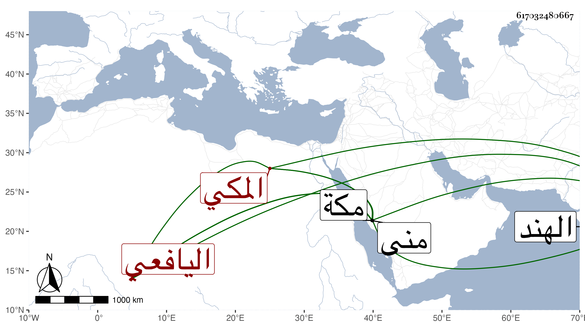

0902Sakhawi.DawLamic.ITO20230111-ara1.EIS1600.617032480667
Biography ID: 617032480667
363
عبد الرحمن بن محمد بن عبد الوهاب بن عبد الله بن أسعد الوجيه بن الجمال حفيد العفيف اليافعي الأصل المكي الآتي أبوه وجده . ولد في ذي الحجة سنة إحدى وثلاثين بمنى وحفظ ألفية النحو وعرضها على أبي حامد بن الضياء في سنة أربع وأربعين ، ودخل الهند وأثرى لاعتقادهم في سلفه ثم عاد لمكة حتى مات بها في صفر سنة ثمان وسبعين عفا الله عنه . أرخه ابن فهد .
